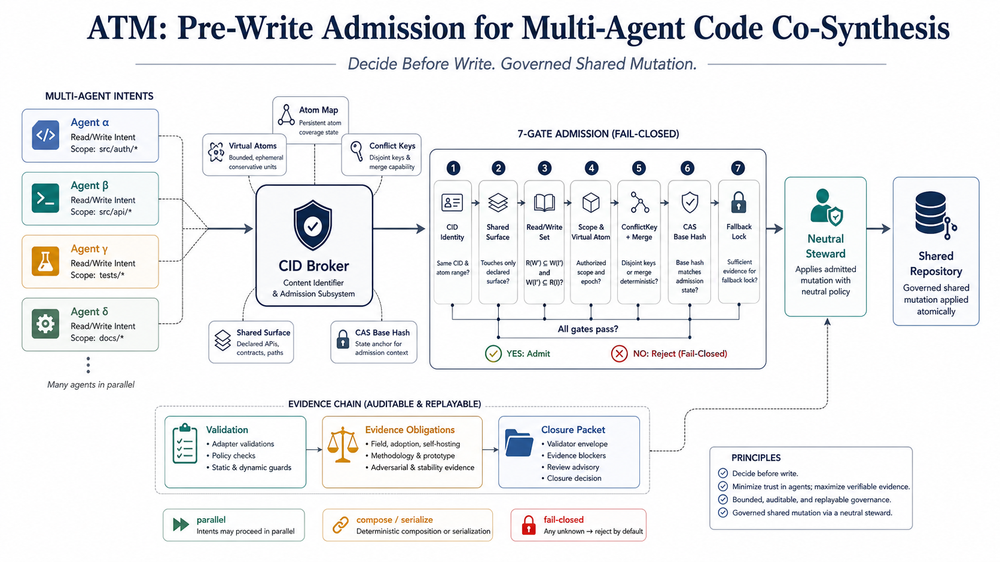

Framework + paper
ATM: CID-Brokered Pre-Write Admission for Multi-Agent Code Co-Synthesis
A usable engineering framework first, and a paper-backed governance model second, for deciding before a governed shared write is applied.
ATM reframes concurrent AI code writing as a pre-write admission problem. Instead of waiting for Git merge, failing validators, or human review to discover conflicts after the fact, the framework compares structured write intents before a governed shared mutation lands.

What problem does the paper address?
Multi-agent LLM systems can plan, generate, validate, and repair software, but a narrower systems question remains unresolved: before any governed shared mutation is applied, how should a system decide which concurrently formed write intents may proceed in parallel, which require deterministic composition or serialization, and which must take a fail-closed path?
ATM binds task intent, repository scope, write admission, validation, and evidence obligations into a single governance chain. A Content Identifier (CID) broker compares structured write intents with support from atom maps, virtual atoms, ConflictKeys, shared-surface checks, read/write dependency checks, and CAS base-hash revalidation. Governed shared writes are then applied by a neutral steward.
In practice, the framework matters as much as the paper: the engineering value is that ATM gives builders a concrete way to route concurrent agent writes, preserve bounded governance, and keep shared-repository coordination from collapsing into ad hoc merge-time cleanup.
Claim boundary
- ATM does not replace Git merge.
- ATM does not claim cross-clone or cross-PR governance.
- ATM does not claim universal semantic correctness.
- ATM does claim an implementable and auditable pre-write admission layer within one governance domain.
Why this paper may be useful
If you are building coding-agent systems, agent orchestration layers, or repository-level AI workflows, the paper gives you a concrete framing for one problem that often arrives too late in downstream tooling: deciding when shared writes should be admitted before they mutate the governed surface.
FAQ
Git merge resolves divergence after versions already exist. ATM intervenes earlier, before a governed shared write is applied inside one controlled domain.
CRDTs solve text-level convergence. ATM focuses on repository-governance admission using atoms, virtual atoms, shared surfaces, and evidence obligations.
No. The paper explicitly scopes itself to a single authority governance domain.
Once the arXiv identifier is announced, this page will be updated with the final public paper link, identifier, and artifact anchors.